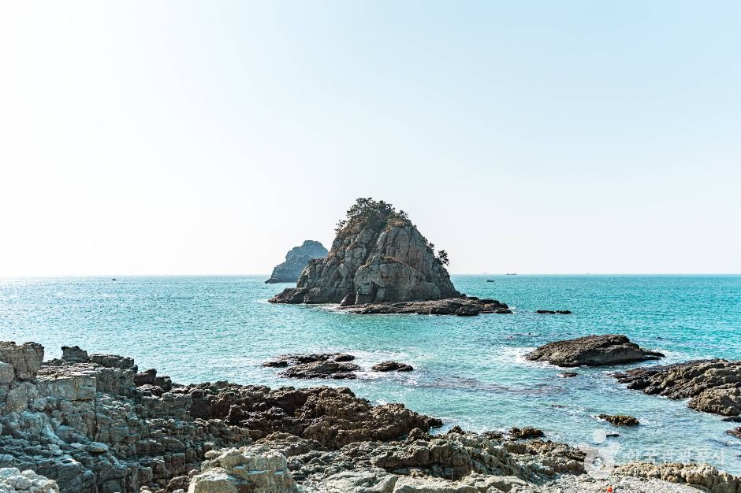
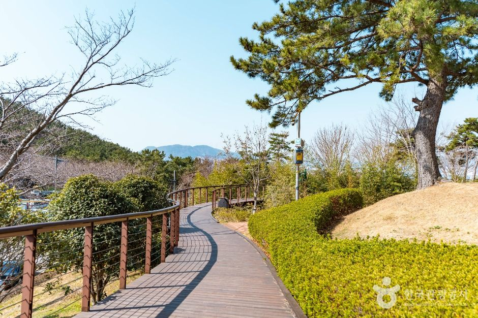
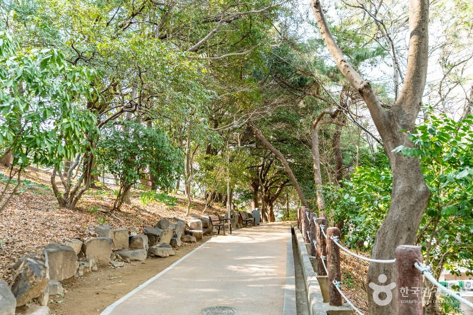
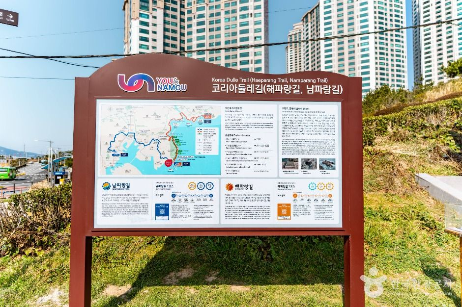
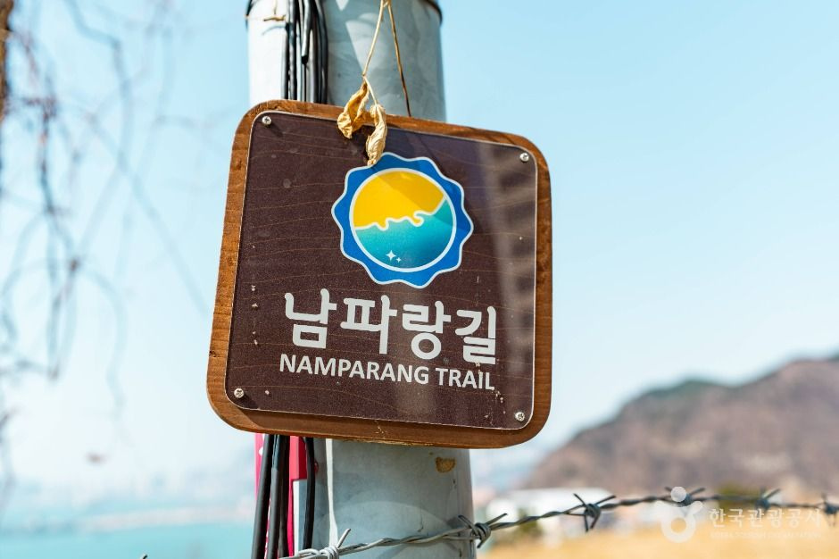

Busan Namparang Trail Guide: Overview
This Busan Namparang Trail guide covers the first stretch of Namparang-gil (남파랑길), Korea's southern coastal walking trail. The name means "a path along the deep-blue southern sea." The full trail has 90 courses covering about 1,470km, from Oryukdo Haemaji (Sunrise) Park in Busan to Ttangkkeut Village in Haenam.
The Busan section is Courses 1–5, from Oryukdo to Eulsukdo. It takes you along cliffs, beaches, the old port and the Nakdong River estuary, all in a single city.

Course 1: Oryukdo to Busan Station
Course 1 runs about 19km (around 7 hours, moderate) from Oryukdo Haemaji Park to Shanghai Street (Chinatown) in Choryang, near Busan Station. It shares much of its route with Galmaetgil 3-1 and 3-2. Along the way you pass Sinseondae, the UN Memorial Cemetery and the Busan Museum.
The Oryukdo islets are famous because they look like six peaks from the east and five from the west. That's where the name comes from: o-ryuk means "five-six."


Courses 2–5: Yeongdo to Eulsukdo
| Course | Highlights |
|---|---|
| Course 1 | Oryukdo Haemaji Park → Shanghai Street (Busan Station) · 19km · about 7h · moderate |
| Course 2 | Passes through Yeongdo Island |
| Course 3 | Songdo Beach, the Songdo coastal Bolle-gil walkway and Amnam Park |
| Course 4 | Dadaepo Beach → Molundae |
| Course 5 | Eulsukdo → Nakdong River estuary bank → Songjeong Park (Gangseo-gu) · 21.9km · about 7h · easy |
Course 5 starts at Eulsukdo, a migratory-bird habitat in the Nakdong River estuary. It's a flat, easy walk.


Visitor Information
| Item | Details |
|---|---|
| Start point | Oryukdo Haemaji (Sunrise) Park, Nam-gu, Busan |
| Getting to the start | Bus 24 from Kyungsung Univ.·Pukyong Nat'l Univ. Station (Line 2) to the Oryukdo Skywalk stop |
| Course 1 finish | Shanghai Street (Chinatown), near Busan Station (Line 1) |
| Opening | Open at all times, no closing days |
| UN Memorial Cemetery | Oct–Apr 09:00–17:00 · May–Sep 09:00–18:00 (last entry 30 minutes before closing) |
| Contact | Busan Nam-gu Office Tourism & Sports Division, +82-51-607-4824 |
Sources: Korea Tourism Organization (한국관광공사) and Durunubi trail data. Photos © Korea Tourism Organization. Details may change, so check before you go.
Walking Tips
- Check the weather, wind and sunset time before you set off. Coastal cliffs get windy.
- Bring water, snacks and comfortable walking shoes.
- Plan where you can exit to a bus or subway stop, because the courses are long.
- Follow the Namparang signposts and course boards along the way.
Pros & Cons
✅ Pros
- Free and open at all times.
- Varied scenery: cliffs, beaches, the port and the estuary.
- Good public transport at the start and finish of Course 1.
- Easy to split into shorter walks.
⚠️ Cons
- Courses are long, at around 7 hours each.
- Some cliff sections can be windy and exposed.
- Attractions along the way have their own opening hours.
Who It Suits
- Great for: Walkers who want a full day of coastal scenery in Busan.
- Great for: Travelers combining a hike with Busan Station or Chinatown.
- Less ideal: If you only have an hour, just walk the Oryukdo section near the start.
Book Your Busan Trip
Namparang Trail FAQ
What is the Namparang Trail?
Namparang-gil (남파랑길) means a path along the deep-blue southern sea. It's a national coastal walking trail of 90 courses and about 1,470km, running from Oryukdo Haemaji Park in Busan to Ttangkkeut Village in Haenam.
Where does the Namparang Trail start in Busan?
At Oryukdo Haemaji (Sunrise) Park in Nam-gu, Busan. To get there, take bus 24 from Kyungsung Univ.·Pukyong Nat'l Univ. Station to the Oryukdo Skywalk stop.
How long is Namparang Course 1?
Course 1 runs about 19km from Oryukdo Haemaji Park to Shanghai Street (Chinatown) near Busan Station. It takes about 7 hours and is rated moderate.
Which courses are in Busan?
Courses 1 to 5, from Oryukdo through Yeongdo, Songdo, Dadaepo and Molundae to Eulsukdo and the Nakdong River estuary. Course 5 is an easy 21.9km (about 7 hours) from Eulsukdo to Songjeong Park in Gangseo-gu.
Is there an entry fee or closing day?
The trail itself is open all the time and has no closing days. Attractions along the way, like the UN Memorial Cemetery, have their own hours.
Lightweight Hiking Daypack
Carry water, snacks and a windbreaker on long coastal courses.